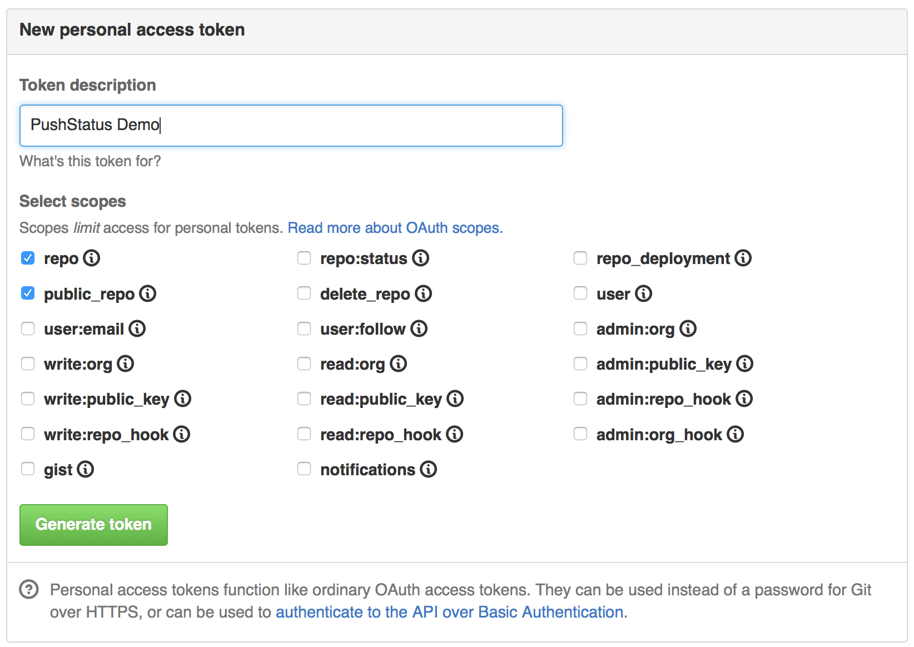
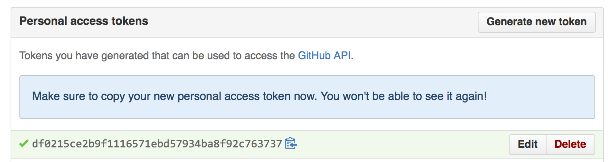
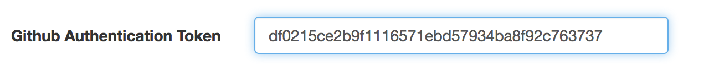

Pushing Status Messages to GitHub
Cider-CI can push status messages of Cider-CI jobs to GitHub.
Configuration
- Create an Authentication Token on GitHub.
Visit your Personal access tokens page on GitHub and create a new token.

- Copy the Token.

- Configure the Repository on Cider-CI with the Token.
Visit your instance of Cider-CI. Set the GitHub Authentication Token for your Repository (Administration → Repositories → Repository → Edit).

Verification
- Run a Job.

- Watch Status Message on GitHub
Statuses are shown with pull requests or on the branches overview page of your GitHub project: https://github.com/YOUR-ORGANIZATION/YOUR-PROJECT/branches.